恒星在主星序上停留的时间，取决于恒星中心区域的氢燃烧的时间。中心区域的氢燃烧完之后，恒星就会离开主星序。本质上，这一时间是由恒星的初始质量所决定的。我们已经知道，质量不同的恒星，进入主星序的位置是不同的。同时，不同质量的恒星，主序之后也将经历不同的演化进程。在赫罗图上看来，它们将经由不同的演化路径而到达不同的归宿。
质量小于 2.3M_{\text{总}} 的恒星，当中心区域的氢燃烧完之后，将形成一个氦中心核和氢丰富的外层。但此时中心的温度还不够高，不足以使氦进一步发生聚变，因而中心部分可以看成是一个“冷”的核。在这个“冷”的氦核表面附近，氢继续在燃烧，形成一个氢燃烧的壳层，并维持恒星辐射的大部分能量。氢壳燃烧产生氦，因而氦核的质量继续增大，但增大到一定程度后，由于内部压力不足就开始引力收缩。收缩使得引力势能转化为热辐射能，这些能量注入到氢外层，从而使外层膨胀、恒星的半径增大。同时，外层气体的膨胀又造成恒星的表面温度下降，因此恒星就离开主星序，在赫罗图上向右上方移动，由主序星演化为亚巨星。由于外层气体对光子逃逸的阻挡作用，恒星的表面温度下降到一定程度会停止，而膨胀却继续。这样，恒星表面积(因而光度)增大而温度几乎不变，亚巨星就在赫罗图上几乎垂直地上升到红巨星(参见图3.9)。
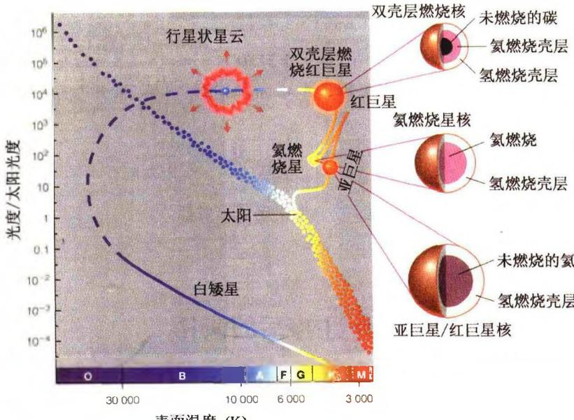
图 3.9 太阳质量的恒星主序后的演化红巨星以后的演化也是和中心核发生的物理过程紧密联系的。随着中心核的质量不断加大和引力收缩，核心的温度会不断升高。这样我们就会想到，也许可以按照氢聚变为氦的模式，由氢核(质子)逐次合成所有越来越重的原子核。这一想法是自然的，但实际上并不这么简单。问题在于，自然界中并不存在原子量为5和8的稳定元素，所以不可能简单地按一次加一个或几个氢核的办法来合成所有的元素。1951年，欧匹克(E. Opik)和萨尔佩特(E. Salpeter)指出，当恒星核内温度超过 4 \times 10^{8} \mathrm{~K} 时，会发生三重 \alpha 粒子反应（简称 3\alpha 反应）：
3 ^ {4} \mathrm{He} \rightarrow^ {1 2} \mathrm{C} + 7. 2 7 \mathrm{MeV}\tag{3.98}
但他们计算得到的反应几率(或反应截面)还是太小,不足以产生足够多的碳。1953年,霍伊尔(F. Hoyle)考虑了核共振的影响,把反应几率提高了 10^{7} 倍,同时反应所需的温度也降到 10^{8} K,这样 3\alpha 反应的实现就完全可能了。1957年,伯比奇等(M. Burbidge, G. Burbidge, W. Fowler and F. Hoyle)提出了恒星中元素合成的系统理论(通常称为 B^{2}FH 理论),按照他们的理论,碳一旦形成,更重的原子核(直到铁原子核)就可以通过与氦核的聚变反应或中子吸收而形成。
小质量的恒星变为红巨星后，中心氦核区域的电子由于密度增大而发生简并。理论计算表明，当中心简并核的质量达到临界值 M \simeq 0.45M_{\odot} 时，中心温度可达 \sim 10^{8}\mathrm{K} ，此时氦开始燃烧，即开始 3\alpha 反应，氦聚变使核的温度上升，中心区域发生绝热膨胀。但在电子简并的情况下，绝热膨胀时压力并不减小，所以核反应加速进行。这样进行的氦燃烧是一种爆炸式的燃烧，称之为氦闪。氦闪的时间很短，一般只有几秒到几分钟。
氦闪产生大量热量使温度升高，但密度基本保持不变，因而氦核内的电子由简并的变为非简并的。此时星核膨胀、吸热、光度骤减，恒星在赫罗图上的位置下降，然后进入稳定的氦燃烧阶段。这时主要的反应是氦聚变为碳即 3\alpha 反应，同时也有一定数量的氧生成，即
{ } ^ { 1 2 } \mathrm{C} + { } ^ { 4 } \mathrm{He} \rightarrow { } ^ { 1 6 } \mathrm{O} + \gamma\tag{3.99}
此时，星核的周围是氢燃烧的壳层，这种核心燃烧氦、壳层燃烧氢的状态称为水平分支。水平分支在赫罗图上的位置，既与恒星的初始质量有关，也与红巨星阶段外层的质量损失（星风所造成）有关。
当中心氦核中的氦耗尽之后，中心核变为由碳和氧组成的碳-氧核，且核心由于核反应停止而开始收缩，从而升高了外层的压力和温度。这样，核心外缘又有一层氦点火，而点火的氦层之外还有一层氢在燃烧，恒星处于双壳层燃烧阶段。这种双壳层产能的阶段称为渐近巨星分支(Asymptotic Giant Branch,简称AGB)。在这一阶段中，中心碳-氧核的质量继续增加，恒星的光度由于双壳层燃烧产能而增大，使外部包层不断膨胀，因此恒星又上升到红巨星分支(图3.9,3.10)。
当星核由于进一步收缩而再次发生电子简并时(星核部分相当于一颗热的碳-氧白矮星)，燃烧的双壳层变得更大因而光度更大，在双壳层燃烧的结束阶段便形成红超巨星。由于此阶段外壳物质的大量损失(超星风所致)，红超巨星生存的时间不会太久。红超巨星以后，外层物质损失非常快，相当于物质抛射(图3.11)，壳层燃烧物质迅速靠近表面而消失，从而恒星的演化轨迹在赫罗图上向左方移动，变为行星状星云（见图3.12）。而星云的中心就是原来的星核，此时它已成为一颗独立的碳-氧白矮星。
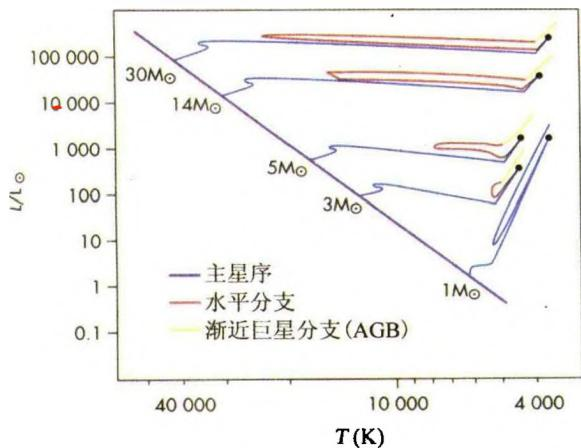
图 3.10 不同质量的恒星主序后的演化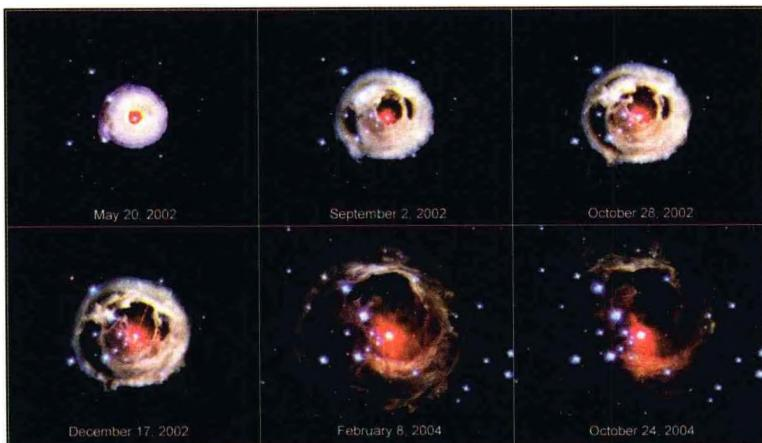
图3.11 红超巨星V838演化晚期的物质抛射过程， 时间是从2002年3月20日到2004年10月24日要补充说明的是， M<0.5M_{\odot} 的恒星，中心氢燃烧结束后形成的氦核是电子简并的，并且氦核的质量小于氦燃烧的临界值（ \simeq0.45M_{\odot} ）。同时，由于外层氢的质量很少，氢燃烧补充的氦也不足以使氦核的质量达到上述临界值。因此，当电子简并的氦核收缩时，不会发生氦燃烧。这样，初始质量 M < 0.5M_{\odot} 的恒星最终将演化为氦白矮星，而演化为碳-氧白矮星的恒星初始质量在 0.5M_{\odot} < M < 2.3M_{\odot} 之间。
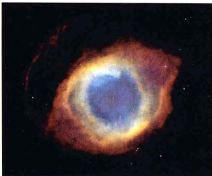
(a) 螺旋星云 NGC7293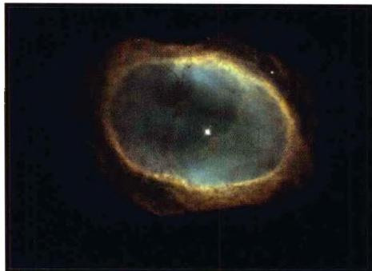
(b) NGC3132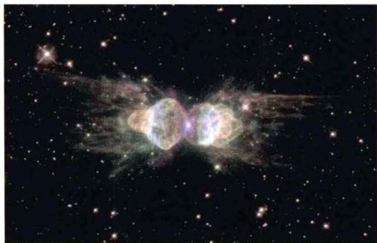
(c) 蚂蚁星云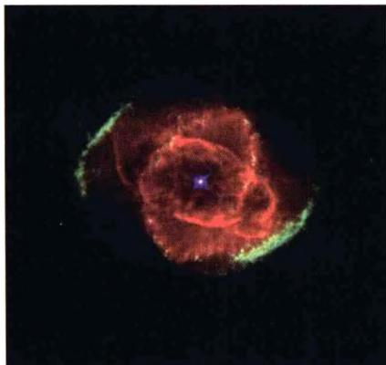
(d) 猫眼星云 NGC6543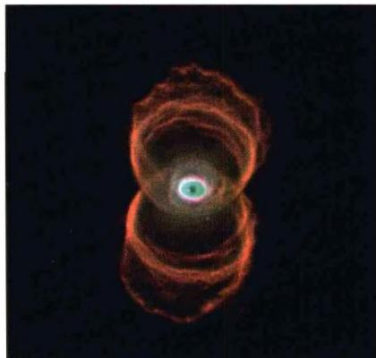
(e) 沙漏星云 图3.12 千姿百态的行星状星云中等质量的恒星，中心的氢燃烧完了之后，也会形成一个氦核，氦核的外边缘处有一个氢燃烧的壳层。与小质量恒星相同，这时恒星也会离开主星序，向红巨星分支演化。所不同的是，中等质量的恒星演化到红巨星的时间非常短，例如 M = 5M_{\odot} 的恒星，这一时间只有 3 \times 10^{6} 年，因此在赫罗图上相应的区域很难观测到恒星的分布，称为赫罗图中的空隙区。恒星到达红巨星时，中心的温度已升高到 10^{8}K ，从而氦开始燃烧，主要反应也是氦原子核聚变为碳和氧。但与小质量恒星不同的是，氦燃烧不经过氦闪，而直接进入平稳燃烧的阶段，同时整个恒星内部的对流很强。对流使得中心区域的氦不断被搬运到核的表面，形成氦燃烧壳层，而中心部分逐渐变成由碳、氧组成的核。这样，就形成了氦燃烧层之外又有一个氢燃烧层的双壳层燃烧结构。另一方面，由于外壳中氢和氦的电离区内会产生一种激发脉动的机制，这一阶段演化的赫罗图轨迹将向左右来回摆动，中间穿过被称为造父脉动带的区域。在经过这一区域时，恒星就产生径向脉动而变成造父变星。而一旦离开造父脉动带，恒星又恢复到正常情况。
此后，由于碳-氧核质量的增大并向内收缩，核内电子发生简并。这时外壳层膨胀使恒星的光度升高很快，恒星的演化轨迹也像小质量恒星那样，进入渐进巨星分支即AGB阶段。但中等质量恒星在AGB阶段可能出现一些特殊现象，例如热脉动、造父脉动，并会产生非常巨大的星风（超星风），其造成的物质损失可达每年 10^{-5}\sim10^{-4}M_{\odot} 。另一方面，在AGB阶段，中心碳-氧核区域会产生大量中微子，它们携带大量能量逃逸，从而使简并的碳-氧核区域温度降低。
中等质量的恒星的最终演化,可能有两种结局:如果氦壳层的燃烧,不能使碳-氧核的质量增大到发生进一步聚变的临界质量,则中心核不再发生新的核反应,恒星将由 AGB 阶段变为行星状星云,最后演化成为一颗碳-氧白矮星。而如果碳-氧核质量增大到可以使进一步聚变发生,此时由于碳-氧核是简并的,它发生碳燃烧时是爆炸式的燃烧,即形成超新星爆炸。一般认为,如果恒星的初始质量在 2.3M_{\odot}<M<6\sim8M_{\odot} 范围,则将演化为碳-氧白矮星,这类星占绝大多数。质量为 \sim8M_{\odot} 的恒星,演化为超新星的可能性比较大,但也可能成为白矮星,取决于 AGB 阶段后期超星风造成的物质损失有多少。
大质量恒星通常是 O 型和 B 型星，它们在银河系中只占恒星总数的 10% 左右。和中、小质量星不同，大质量恒星在经过氢燃烧和氦燃烧之后，所生成的碳-氧核是电子非简并的，因此在发生碳燃烧时，中心核不会出现剧烈的闪耀现象。同时，大质量星在演化的过程中，星风所造成的物质流失极大。特别是演化后期，不断将内部产生的重元素抛射到宇宙空间，因此大质量星是星际介质、特别是重元素的重要来源。由于剧烈的物质抛射以及内部对流，大质量星在离开主星序后的演化途中，往往要在红超巨星和蓝超巨星之间来回反复几次（见图 3.10），中间也经过造父不稳定带而成为造父变星。
核心中的氦消耗殆尽的恒星，是由碳-氧中心核 (r\sim 0.1R_{\odot}) ，氦壳层 (r\sim 0.3R_{\odot} ，密度达 10^{3}\mathrm{g / cm}^{3} )以及富氢包层 (R\sim 10^{3}R_{\odot}) 构成。当中心温度达到 10^{9} K左右，碳开始燃烧：
{ } ^ { 1 2 } \mathrm{C} + { } ^ { 1 2 } \mathrm{C} \rightarrow\begin{array} { l }{ } ^ { 2 3 } \mathrm{Na} + \mathrm{p} + 2 . 2 3 8 \mathrm{MeV}\\{ } ^ { 2 0 } \mathrm{Ne} + \alpha + 4 . 6 1 7 \mathrm{MeV}\\{ } ^ { 2 4 } \mathrm{Mg} + \gamma + 1 3 . 9 3 \mathrm{MeV}\end{array}\tag{3.99}
碳燃烧完，经核心引力收缩，又开始氧燃烧：
{ } ^ { 1 6 } \mathrm{O} + { } ^ { 1 6 } \mathrm{O} \rightarrow\begin{array} { l }{ } ^ { 2 8 } \mathrm{Si} + \alpha + 9 . 5 9 3 \mathrm{MeV}\\{ } ^ { 3 1 } \mathrm{P} + \mathrm{p} + 7 . 6 7 6 \mathrm{MeV}\\{ } ^ { 3 1 } \mathrm{S} + \mathrm{n} + 1 . 4 5 9 \mathrm{MeV}\\{ } ^ { 3 2 } \mathrm{S} + \gamma + 1 6 . 5 3 9 \mathrm{MeV}\end{array}\tag{3.100}
碳、氧之间的反应，如果碳足够多，反应率很小，可以忽略。氖和氧燃烧完之后，再经过一个引力收缩，就引发镁、硅燃烧，最后生成铁中心核（见图3.13，3.14）。
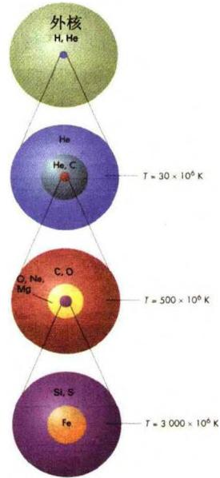
在上述反应期间，对流很活跃，且质量越大的星，对流层越容易深入内部。对流的结果，使有些恒星外层的化学成分变得很复杂，这就导致碳星或硫型星的出现。与氢聚变为氦的反应不同，上述这些
图 3.13 大质量恒星
星核内部的核反应
反应都非常迅速(属于强作用型)。例如一颗质量 25M_{\odot} 的恒星, 氢燃烧持续的时间为 700 万年，氦燃烧持续的时间为 50 万年，碳燃烧是 600 年，氧燃烧是 1 个月，而硅燃烧只有 1 天。
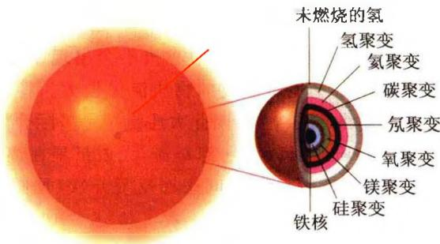
图 3.14 大质量恒星的演化: 核心内部结构到最后形成的中心核是由铁构成的，因为在原子核中，铁原子核的比结合能最大(图3.15)，其他原子核反应不可能放出比它更大的热能。虽然铁原子核是所有原子核中最稳定的，但如果铁中心核再发生引力收缩(坍缩)，内部温度将继续上升，当温度达到 5\times10^{9} K时，铁核可能产生光致分解：
{ } ^ { 5 6 } \mathrm{Fe} \rightarrow 1 3 { } ^ { 4 } \mathrm{He} + 4 \mathrm{n} - 1 2 4 . 4 \mathrm{MeV}
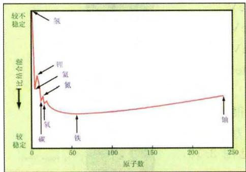
图 3.15a 典型原子核的比结合能, 注意比结合能增加的方向为向下(3.101)
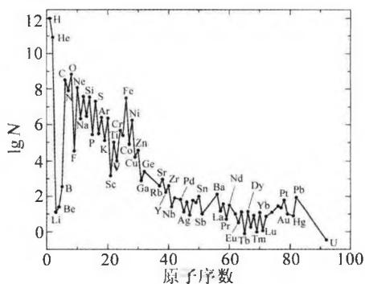
图 3.15b 太阳光球中的元素相对丰度,位于丰度极值处的元素,其结合能也相应于极值注意此时放出的能量是负的,这意味着光致分解过程是一个吸热过程。由于这一反应,恒星就处于静力学不稳定的状态,可能突然收缩,这就是导致超新星爆发的
导火线。
综上所述，决定恒星特性和演化进程的主要因素，是恒星的初始质量。质量小于 0.08M_{\odot} 的天体，其自身引力不足以使中心区域达到氢点火的温度，故不能靠核反应发光，最多只能靠热气体而发光。这样的天体不能称为恒星，现在大家把它们叫作褐矮星(Brown Dwarfs)。褐矮星比行星大但比恒星小，也有人把它们戏称为失败的星球(failed stars)。近几年已发现在银河系中有多个这样的微暗天体，它们的质量一般只有太阳的 7\% 左右。有些比较年轻和大的褐矮星，质量也只有木星的10至70倍，最多是太阳质量的十分之一。表3.3及图3.16、图3.17给出了不同质量恒星的演化结果。
表 3.3 各种质量恒星的演化结果
| T_c(K) | M(M_⊙) | 最终阶段 |
|---|---|---|
| \leqslant 8.5\times 10^7 | 0.08~0.5 | 氦白矮星 |
| \leqslant 10^9 | 0.5~2.3 | 碳-氧白矮星和行星状星云 |
| \geqslant 10^9 | 2.3~8 | 碳-氧白矮星和行星状星云,或碳爆发型超新星 |
| 8~30 | 中子星(铁中心核超新星) | |
| \geqslant 10^{10} | 30~100 | 黑洞(抛射质量或坍缩) |
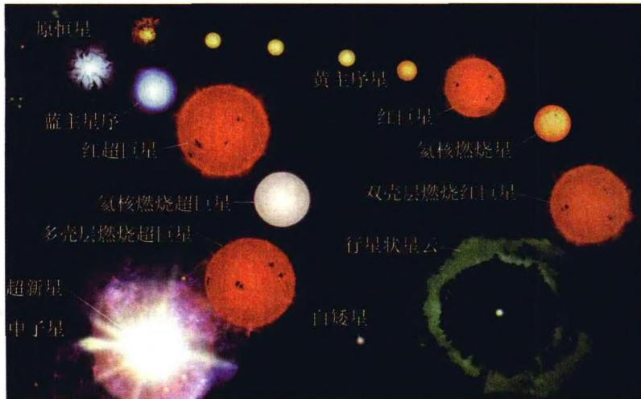
图 3.16 恒星演化的主要路径。左上角为原恒星，左、 右两个演化序列分别相应于大质量恒星和低质量恒星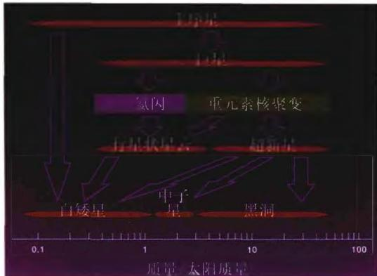
图3.17 恒星演化的主要过程与结局